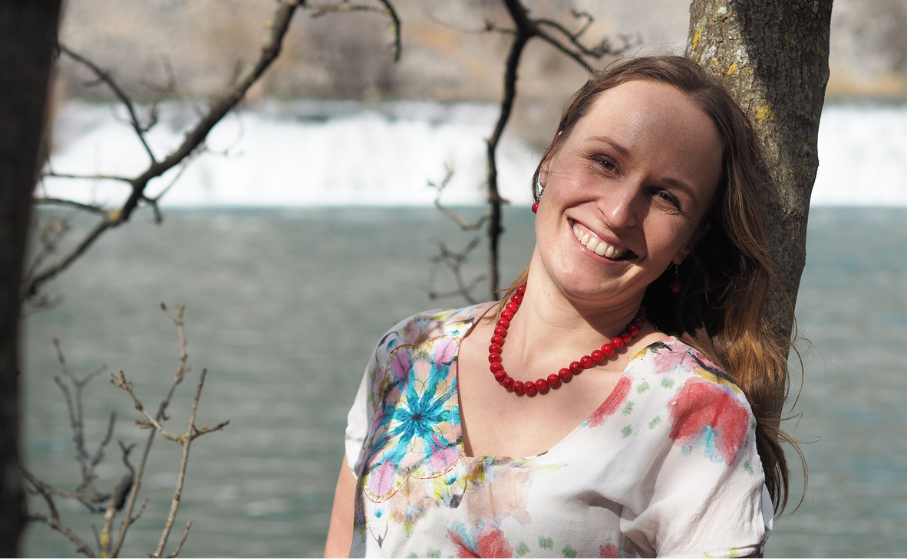

Online terapie
- Individuální psychoterapie
- Párová terapie
- Krizová intervence
- Psychologická konzultace
- Poradenství

Jsem vystudovaná psycholožka a mám plně dokončený komplexní psychoterapeutický výcvik v systemickém, na řešení orientovaném přístupu.
Pracovala jsem na pozici dětské psycholožky v Pedagogicko-psychologické poradně, mám zkušenosti i ze zařízení pro děti vyžadující okamžitou pomoc nebo doléčovacích center. Od roku 2021 poskytuji online psychoterapie pro dospělé, dospívající i děti (od 7 let).
Spolupracuji se školami v rámci vzdělávacích programů a adaptačních kurzů. Jsem členem České asociace pro psychoterapii. Od roku 2023 mám složenou zkoušku v canisterapii.
Zabývám se tématem úzkostných stavů, panických atak, stresu a sebevědomí. Mohu Vám pomoci při zpracování ztráty, nabízím doprovázení i krizovou intervenci v případě nečekaných událostí. Rádapracuji s konceptem naděje, s klienty se zabýváme tím, jak dostat více radosti a spokojenosti do jejich života. Věřím, že na tom opravdu záleží.
Můj terapeutický styl je orientovaný na řešení. Věřím, že zaměření na to, co je již teď ve vašem životě funkční a dobré, přinese více než hloubání nad chybami v minulosti. Můžeme se společně zamýšlet nad tím, kým byste chtěli doopravdy být.
Sama aktivně odpočívám procházkami v přírodě, mám ráda zvířata, intenzivně se věnuji kynologii a důležitá je pro mě i enviromentální problematika. Měla jsem možnost procestovat více než čtyřicet států, což ovlivnilo moje hodnoty a způsob vnímání světa.
Věřím, že opravdové bohatství není záležitostí peněz.
950 Kč (50 minut)
1 500 Kč (50 minut)
Pokud to bude možné, poskytnu Vám termín nad rámec vypsaných termínů do 48 hodin500 Kč/A4
Méně než 24 hodin před domluveným termínem - 100%
Mezi 24-48 hodin před sezením je to 50%
Termín je možné bezplatně přeobjednat či zrušit, pokud tak stihnete více než 48 hodin před plánovaným sezením. Při zrušení termínu 48 až 24 hodin předem je účtováno 50 % z domluvené ceny sezení.
Při zrušení termínu méně než 24 hodin předem zaplacená částka propadá.
Storno poplatky jsou vyžadovány z důvodu, že Váš termín je pro ostatní vyblokovaný a již zpravidla nejde obsadit jinými klienty.